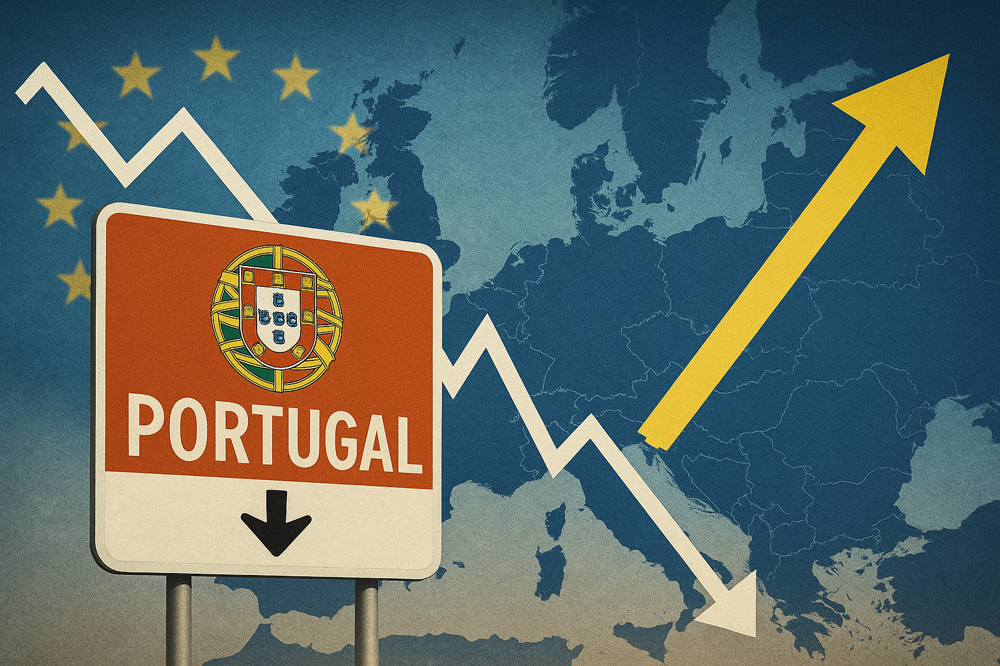

Publicado em 2025-05-21 13:22:47
Há uma dor surda que acompanha quem ama esta terra e observa, década após década, o declínio tranquilo de um país que parece ter abdicado do seu futuro. Portugal, berço de navegadores e poetas, está hoje à beira do esquecimento europeu. Não pelo que foi, mas pelo que deixou de ser.
Enquanto países da antiga URSS se reinventam, inovam e ultrapassam os nossos índices de desenvolvimento, Portugal estagna. A cauda da Europa tornou-se confortável, quase uma identidade nacional — como se a mediocridade tivesse sido adotada como desígnio.
Mas porquê? Porque é que Portugal está cada vez mais atrás, mesmo sendo membro da União Europeia há quase 40 anos?
A política tornou-se um jogo de cadeiras entre os mesmos partidos e famílias ideológicas. Os talentos afastam-se; os oportunistas prosperam. A democracia representativa tornou-se um teatro de sombras onde o povo só é convidado de quatro em quatro anos para aplaudir ou vaiar — mas nunca para decidir.
O empreendedor que ousa criar esbarra com licenças, certidões, impostos e silêncios administrativos. Portugal afoga os seus inovadores num mar de papelada. A máquina do Estado, em vez de facilitar, complica. E os que tentam remar contra a maré, cansam-se.
A escola portuguesa continua a formar bons repetidores e maus sonhadores. A criatividade, a ousadia e o pensamento crítico são vistos como problemas, e não virtudes. O resultado? Exportamos cérebros e importamos mediocridade formatada.
Os impostos não recompensam quem trabalha nem quem arrisca. Os jovens partem. Os que ficam, resignam-se. Somos o país onde o talento é punido e a esperteza compensada.
Enquanto os países de Leste investiram em tecnologia, indústria de ponta, investigação e serviços digitais, Portugal ficou a servir cafés com vista para o mar. Não há mal em ser bonito. O problema é não saber ser mais nada.
A promiscuidade entre política, negócios e justiça destrói a confiança social. Os casos sucedem-se — e prescrevem. Os culpados jantam em restaurantes caros e escrevem livros de autoajuda.
A natalidade é das mais baixas da Europa. A juventude sente-se desenraizada. A esperança tornou-se artigo de luxo. As reformas não vêm. As revoluções já não se fazem.
O conformismo tornou-se património imaterial da nação. Ouvem-se lamentos, mas não gritos. Há crítica, mas não ação. A indignação foi educadamente convidada a sair.
Enquanto isto, Estónia, Polónia, Eslovénia, Lituânia — países que há três décadas tinham estradas de terra batida e economias ruinosas — hoje investem em inovação, digitalização, transparência e mérito. E nós? Ficámos a olhar o pôr-do-sol.
É urgente rasgar os papéis velhos. É urgente libertar os talentos amordaçados. É urgente devolver o poder ao povo que o perdeu sem nunca o ter realmente tido. Porque se não mudarmos o sistema — o sistema mudará por nós, e talvez o faça para pior.
Quando o povo não tem voz, os extremos falam mais alto. E o fim da partidocracia será não um ato de inteligência, mas uma questão de sobrevivência.
Portugal não precisa de mais turistas. Precisa de mais visionários.
Por Francisco Gonçalves in Fragmentos de Caos
Imagem cortesia de OpenAI (c)
Um desabafo sobre o silêncio que sufoca quem ousa pensar. Uma reflexão sobre o ato de escrever num país que prefere calar.
Ler o artigo completo